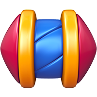
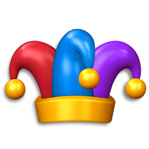
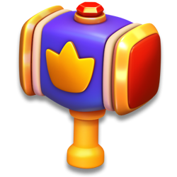
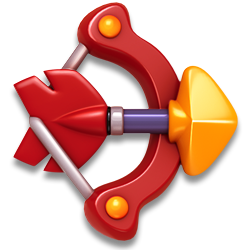
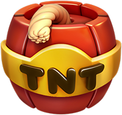
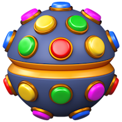
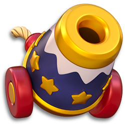

Khinh khí cầu thăng thiên (Balloon Rise)
Sự kiện solo kiểu thang bậc có streak: thắng level để đẩy khinh khí cầu leo 10 bậc, thua thì mất bóng bay.
Mô tả
- Balloon Rise là sự kiện solo kiểu thang bậc: người chơi nhặt collectable trong level để đẩy khinh khí cầu của Duke leo lên 10 bậc, mỗi bậc có một gói thưởng riêng.
- Mở khóa từ level 39; icon khinh khí cầu xuất hiện ở màn hình Home kèm bậc hiện tại, số bóng bay còn lại và đồng hồ đếm ngược.
- Mỗi lần thắng level, số collectable thu được cộng vào bậc đang leo; đủ target thì lên bậc, thắng đậm có thể vượt nhiều bậc trong một lượt.
- Điểm khác biệt so với Pinata Party: thua level sẽ bị phạt — người chơi có 3 quả bóng bay, mỗi lần thua khi đang có tiến độ sẽ mất 1 quả.
- Hết cả 3 bóng thì khinh khí cầu rơi: tiến độ của bậc đang leo bị xóa sạch, số bóng hồi lại 3, nhưng các bậc đã đạt trước đó vẫn được giữ.
- Target mặc định của 10 bậc là 5/5/10/10/10/20/20/20/20/30 collectable, tổng cộng dồn 150 collectable cho cả sự kiện.
- Thưởng từng bậc phải bấm nhận thủ công ở 'nhà chó' tương ứng, hoặc dùng nút Claim All để gom toàn bộ bậc chưa nhận.
- Khi sự kiện hết giờ mà còn thưởng chưa nhận, game sẽ ép mở dialog force claim trước khi người chơi chơi tiếp.
- Server có thể cá nhân hóa bảng target và bảng thưởng cho từng người chơi qua user config, đồng thời đổi theme theo mùa lễ (Christmas, Easter, Halloween).
- Collectable dư khi kết thúc sự kiện có thể được chuyển sang sự kiện kế tiếp cùng nhóm nếu AB test chuyển đổi đang bật.
Lưu ý
Mở khóa & điểm vào
BalloonRiseManager.UnlockLevel = 39 (const), get_HasEnoughLevel kiểm tra level người chơi. Icon hiện khi get_ShouldShowIcon (ShouldProgress = IsSameEvent && RemainingTimeInMs > 0) và IsAllBundlesDownloaded. Event chỉ hoạt động khi server gửi BalloonRiseInfo (ServerEventId, RemainingTime, ConfigVersion, Config, Priority) và không bị DisabledByBackend. CanShowEventIconLocked cho phép hiện icon khoá trước UnlockLevel (EventLockManager).
Điểm vào:
- Icon Balloon Rise ở Home (BalloonRiseIcon / BalloonRiseIconBundledView)
- Dialog trạng thái mở tự động sau thắng/thua level (TryAddFlowActions → TryShowTutorial, TryAddStartDialog log 'Push status dialog by {0}')
- Dialog force claim khi event sắp/đã hết hạn (TryAddClaimDialog log 'Push force claim dialog by {0}')
- Deeplink 'balloonrise' (GetDeeplinkAction, TryAddDeeplinkDialog log 'Dialog opened with DeepLink')
- Prelevel event panel (IsEventShownAtPreLevel)
- Task 'Raise the Duke' trong Mission events (BalloonRiseRaiseDukeTask)
Cách hoạt động
- Người chơi đạt level 39 (UnlockLevel = 39) và server gửi gói BalloonRiseInfo chứa ServerEventId, RemainingTime, ConfigVersion, Config và Priority (BalloonRiseManager.UpdateInfo).
- Client tải bundle theme của sự kiện; khi IsAllBundlesDownloaded và ShouldProgress (cùng event, RemainingTimeInMs > 0) thì icon khinh khí cầu hiện ở Home (get_ShouldShowIcon).
- Nếu là sự kiện mới và người chơi đang ở Home scene, client gọi TryEnterEvent: reset về bậc 1, 0 collectable, 3 bóng (MaxBalloonCount = 3), xóa bit claim, log 'Entered new event:{0}' (BalloonRiseProgress.EnterEvent).
- Client gửi HTTP GetBalloonRiseInfoRequest(EventId) để lấy user config cá nhân hóa (target/thưởng riêng), log 'BR UserEventInfoReceived - UEId:{0} CV:{1}' (UpdateUserEventInfo).
- Vào level, client ghi cờ 'đang trong level' bằng UserInventory.SetDialogsIndex(true, 0x1F) để sau này phát hiện kill app (EnteredLevel/EnteredStoryLevel).
- Thắng level: WonLevel(collectedAmount) cộng collectable vào bậc hiện tại; nếu bật multiplier thì số lượng được nhân (EventsHelper.GetCollectableCountWithMultiplier).
- Nếu collectible ≥ target của bậc (mặc định 5/5/10/10/10/20/20/20/20/30) thì lên bậc và lặp tiếp, đếm NewClaimableStepCount, mỗi bậc hoàn tất bắn analytics BrFinish (BalloonRiseProgress.IncreaseStep).
- Phần collectable dư được giữ lại cho bậc kế; nếu đã tới bậc 11 (FinishedStep) thì đặt về 0 (SetCollectibleCount).
- Thua level khi bậc hiện tại đã có tiến độ: bắn BrStreakLost rồi trừ 1 bóng (DecreaseBalloonCount); nếu bóng còn lại < 1 thì rơi — ResetStepProgress xóa tiến độ bậc, đặt DidFall = true và hồi về 3 bóng.
- Bấm bỏ level giữa chừng sẽ hiện cảnh báo mất bóng (BalloonRiseWarningBundledView); nếu vẫn thoát thì xử lý như thua (UpdateProgressForLevelFail).
- Kill app giữa level: lần mở lại, CheckIfQuitInGame đọc cờ 0x1F — kill chủ động vẫn bị tính thua ('Game killed in game scene, level fail for balloon rise!'), crash thật thì bỏ qua.
- Sau mỗi level, dialog trạng thái tự bật (TryAddStartDialog log 'Push status dialog by {0}') và chạy animation so sánh LastSeenStep/LastSeenProgress/LastSeenBalloons với hiện tại (PrepareAnimationData).
- Lần đầu gặp từng tình huống sẽ hiện 4 tutorial: FirstWin (0), FirstFail (1), FirstReachedStep (2), FirstFall (3); cờ đã xem lưu ở bit 38..43 — 6 bit cho 6 loại tutorial, gồm cả EventTutorial (4) và MigratedEventTutorial (5) (SetTutorialData).
- Nhận thưởng: Claim(step) yêu cầu step < bậc hiện tại và chưa claim; gói thưởng vào inventory với source 'BR-{steps}' và bắn analytics BrClaim (GiveRewards).
- Claim All gom mọi bậc chưa nhận từ bậc 1 tới bậc hiện tại − 1 rồi SetAllClaimData(true) và đồng bộ backend (ClaimAll / SaveAndSyncData).
- Khi RemainingTimeInMs ≤ 0 mà còn bậc chưa nhận, hệ thống ép mở dialog claim (TryAddClaimDialog log 'Push force claim dialog by {0}').
- Claim đủ 10 bậc gọi UserStatsHelper.OnBalloonRiseCompletion; nếu server đã có sự kiện mới thì vào last session ('LastSession Entered!') rồi LastSessionCompleted() để chuyển sang sự kiện kế.
- Collectable dư có thể được chuyển sang sự kiện kế tiếp cùng nhóm khi AbTestHelper.IsRemainingCollectablesConversionAbEnabled bật (AddConversionCollectables, analytics RemainingCollectableConvert).
Luồng chi tiết theo code
Bind() khởi tạo CreateProgressAndData và log 'BalloonRise Manager Initiated with LocalData:{0} - Progress:{1}'. FillFromLocal() đọc BalloonRiseProgress từ key 'BalloonRiseProgress2' và BalloonRiseData (bảng key-value nhiều trường). Server gửi BalloonRiseInfo → UpdateInfo() log 'UpdateInfo ServerEventId:{0}, ' và 'EndDate:{0}, EventPriority:{1}'; ShouldUpdateInfo() bỏ qua nếu IsDisabledByBackend (log 'Disabled by backend, don''t update info.'). TryEnterEvent() chạy khi CanJoinEvent (event mới, còn đủ thời gian, đang ở Home scene): BalloonRiseProgress.EnterEvent(eventId), BalloonRiseConfigHelper.UpdateUserConfig, BalloonRiseData.EnterEvent, UserManager.SendDataToBackend, log 'Entered new event:{0}', ResetIconAnimationData và (nếu AbTestHelper.IsRemainingCollectablesConversionAbEnabled) chuyển collectable dư từ event cùng nhóm. User config riêng lấy bằng HTTP GetBalloonRiseInfoRequest(EventId) → UpdateUserEventInfo() log 'BR UserEventInfoReceived - UEId:{0} CV:{1}'. Trong level: EnteredLevel()/EnteredStoryLevel() ghi cờ dialog (UserInventory.SetDialogsIndex index 0x1F) để phát hiện crash. Thắng: WonLevel(collectedAmount) cộng collectible; nếu collectibleCount ≥ GetStepTarget(step) thì lặp tăng step (IncreaseStep) tới khi không đủ, đếm NewClaimableStepCount, gửi SendFinishAnalyticsEvent (BrFinish) cho từng bậc hoàn tất, SetCollectibleCount phần dư (0 nếu step = 11), MissionEventsCommonTaskHelper.SetMissionProgressAmount(4, 1). Thua: FailedLevel() → nếu collectibleCount != 0 thì SendBalloonLostAnalyticsEvent (BrStreakLost) và DecreaseBalloonCount; nếu balloonCount − 1 < 1 thì ResetStepProgress (rơi, DidFall = true) và reset về 3 bóng. Crash trong level: CheckIfQuitInGame đọc DialogsIndex 0x1F, log 'Game killed in game scene, level fail for balloon rise!' hoặc 'Game crashed in game scene, not level fail for balloon rise' rồi gọi UpdateProgressForLevelFail. Claim: Claim(step, onSucceed) hoặc ClaimAll() lấy GetUnclaimedSteps, GiveRewards với source 'BR-{steps join ''-''}' (log 'GiveStepRewards EventId: {0} Steps: {1}'), SetClaimData(step, true), analytics BrClaim, và UserStatsHelper.OnBalloonRiseCompletion khi AllStepsClaimed. Khi đã claim hết và có event mới trên server thì SetLastSessionEntered → IsLastSessionOfEvent = true, log 'LastSession Entered!'; vào Home lần sau LastSessionCompleted() log 'Last session completed!' rồi vào event mới.
Phần thưởng
PHẦN THƯỞNG BALLOON RISE (10 BẬC – CONFIG MẶC ĐỊNH)
| Bậc | Target bậc (collectable) | Cộng dồn | Phần thưởng |
|---|---|---|---|
| Bậc 1 | 5 | 5 |  1Rocket |
| Bậc 2 | 5 | 10 |  1Jester Hat |
| Bậc 3 | 10 | 20 | ∞15 phútUnlimited Lives |
| Bậc 4 | 10 | 30 |  1Royal Hammer 1Arrow |
| Bậc 5 | 10 | 40 |  1TNT 1Light Ball |
| Bậc 6 | 20 | 60 | 1Arrow  1Cannon |
| Bậc 7 | 20 | 80 | 500Coin |
| Bậc 8 | 20 | 100 | ∞15 phútUnlimited Rocket ∞15 phútUnlimited TNT ∞15 phútUnlimited Light Ball |
| Bậc 9 | 20 | 120 | 1Royal Hammer 1Cannon 1Jester Hat |
| Bậc 10 | 30 | 150 | 1000Coin |
CẤU TRÚC THƯỞNG DO SERVER CẤU HÌNH
| Nguồn config | Điều kiện | Phần thưởng |
|---|---|---|
| balloon_rise_default_config.json (client default) | Dùng khi chưa có server/user config | 10 gói thưởng r[0..9] như bảng trên |
| BalloonRiseConfig.t / BalloonRiseConfig.r (server config) | Áp dụng chung cho phiên event theo ConfigVersion | Target và gói thưởng từng bậc ghi đè config mặc định (server) |
| BalloonRiseUserConfigInfo.UserConfig (user config) | Cá nhân hóa theo người chơi, lấy qua GetBalloonRiseInfoRequest | Target và gói thưởng riêng từng người chơi (server) |
| BalloonRiseConfig.butlerMultiplierAbTargets | Khi bật AB test butler multiplier | Bảng target thay thế (server) |
Phần thưởng theo code
| Ngữ cảnh | Phần thưởng | Evidence |
|---|---|---|
| Bậc 1 (5 collectible) | 1Rocket | balloon_rise_default_config.json r[0] |
| Bậc 2 (5) | 1Jester Hat | balloon_rise_default_config.json r[1] |
| Bậc 3 (10) | ∞15 phútUnlimited Lives | balloon_rise_default_config.json r[2] |
| Bậc 4 (10) | 1Royal Hammer 1Arrow | balloon_rise_default_config.json r[3] |
| Bậc 5 (10) | 1TNT 1Light Ball | balloon_rise_default_config.json r[4] |
| Bậc 6 (20) | 1Arrow 1Cannon | balloon_rise_default_config.json r[5] |
| Bậc 7 (20) | 500Coin | balloon_rise_default_config.json r[6] |
| Bậc 8 (20) | ∞15 phútUnlimited Rocket ∞15 phútUnlimited TNT ∞15 phútUnlimited Light Ball | balloon_rise_default_config.json r[7] |
| Bậc 9 (20) | 1Royal Hammer 1Cannon 1Jester Hat | balloon_rise_default_config.json r[8] |
| Bậc 10 (30) | 1000Coin | balloon_rise_default_config.json r[9] |
| Nguồn thưởng trong inventory/analytics | 'BR-' danh sách step nối bằng '-' | BalloonRiseManager.GiveRewards |
Số liệu chính
| Chỉ số | Giá trị | Nguồn |
|---|---|---|
| Mở khóa | Level 39 | BalloonRiseManager.UnlockLevel |
| Số bậc tối đa | 10 bậc | BalloonRiseConfig.t (10 phần tử) |
| Giá trị step khi hoàn thành | 11 | BalloonRiseManager.FinishedStep |
| Số bóng bay tối đa | 3 | BalloonRiseManager.MaxBalloonCount |
| Target bậc 1–2 | 5 collectable/bậc | balloon_rise_default_config.json t[0], t[1] |
| Target bậc 3–5 | 10 collectable/bậc | balloon_rise_default_config.json t[2..4] |
| Target bậc 6–9 | 20 collectable/bậc | balloon_rise_default_config.json t[5..8] |
| Target bậc 10 | 30 collectable | balloon_rise_default_config.json t[9] |
| Tổng collectable cả sự kiện | 150 | balloon_rise_default_config.json t (cộng dồn) |
| Thưởng bậc 10 | 1000 C | balloon_rise_default_config.json r[9].r |
| Thưởng bậc 7 | 500 C | balloon_rise_default_config.json r[6].r |
| Thưởng bậc 3 | 15 ULV | balloon_rise_default_config.json r[2].r |
| Thưởng bậc 8 | 15 UR, 15 UT, 15 ULB | balloon_rise_default_config.json r[7].r |
| Số tutorial tình huống | 4 (FirstWin 0, FirstFail 1, FirstReachedStep 2, FirstFall 3); enum còn EventTutorial 4, MigratedEventTutorial 5, None -1 | BalloonRiseTutorialType |
| Bit tutorial | 38..43 (6 bit) | BalloonRiseProgress TutorialStart/TutorialEnd |
| Bit claim | 25..34 (min(step + 24, 34)) | BalloonRiseManager.SetClaimData |
| Bit số bóng bay | 35..37 | BalloonRiseProgress bitfield |
| Bit collectible count | 17..24 | BalloonRiseProgress bitfield |
| Bit step | 13..16 | BalloonRiseProgress bitfield |
| Bit notification đã gửi | 44 | BalloonRiseProgress.NotificationSentIndex |
| Cờ 'đang trong level' | DialogsIndex 0x1F (31) | BalloonRiseManager.EnteredLevel / CheckIfQuitInGame |
| Mã sự kiện | EventType.BalloonRise = 1 | BalloonRiseManager.GetEventType |
| Tiền tố analytics / nguồn thưởng | "BR" (source 'BR-{steps}') | BalloonRiseManager.EventInitial / GiveRewards |
| Thời lượng sự kiện | RemainingTime → EndDate (server) | Protocol.BalloonRiseInfo.RemainingTime |
| Nhiệm vụ Mission Events | SetMissionProgressAmount(4, 1) mỗi lần thắng level | MissionEventsCommonTaskHelper.SetMissionProgressAmount |
Ghi chú thiết kế
- Nên tích trữ booster và chơi các level dễ khi đang ở bậc target cao (20–30 collectable) vì thua lúc này tốn bóng mà tiến độ mất đi nhiều nhất.
- Thua khi tiến độ bậc hiện tại đang ở 0 collectable thì không mất bóng (chỉ trừ bóng khi collectibleCount != 0); lưu ý phần collectable dư sau khi lên bậc vẫn được giữ lại nên tiến độ thường không về đúng 0.
- Bật multiplier trước level giúp nhân số collectable thu được, rút ngắn số level cần cho các bậc 20–30.
- Thưởng của các bậc đã đạt không bị mất khi hết giờ: game ép mở dialog force claim (TryAddClaimDialog) và có nút Claim All để gom hết; chỉ những bậc chưa đạt target mới không có thưởng.
- Không nên kill app khi sắp thua — hệ thống vẫn tính là thua và trừ bóng qua cờ DialogsIndex 0x1F.
Use case (22)
Bấm vào từng use case để mở. Mở/đóng tất cả
UC-01 Mở khóa & hiện icon Balloon Rise
Các bước- get_ShouldShowIcon() kiểm tra get_ShouldProgress (IsSameEvent && RemainingTimeInMs > 0)
- IsAllBundlesDownloaded() kiểm tra bundle theme (UpdateBalloonRiseBundlesDownloadSettings log 'Set Balloon Rise {0} bundles as isNeededBundle')
- get_IsIconActive() cho phép animation collect
- get_ShouldShowIconOpenState()/ShouldShowIconOpenStateForOnce điều khiển trạng thái mở của icon sau khi step up
| Actor | System |
|---|---|
| Trigger | Vào Home khi đủ level và server có event |
| Điều kiện | Level ≥ 39 (get_HasEnoughLevel), bundle theme đã tải |
| Kết quả | Icon khinh khí cầu hiện ở Home với step hiện tại, số bóng còn lại và đồng hồ đếm ngược |
| Quy tắc / số liệu | UnlockLevel = 39. GetBundleAvailableLevel() quyết định level bắt đầu tải bundle. |
| Evidence | BalloonRiseManager.get_ShouldShowIcon; BalloonRiseManager.get_ShouldProgress; BalloonRiseManager.IsAllBundlesDownloaded; BalloonRiseManager.get_IsIconActive; BalloonRiseManager.GetUnlockLevel; BalloonRiseManager.CanShowEventIconLocked |
UC-02 Nhận thông tin event từ server (BalloonRiseInfo)
Các bước- UpdateInfo(BalloonRiseInfo) log 'UpdateInfo ServerEventId:{0}, ' và 'EndDate:{0}, EventPriority:{1}'
- ShouldUpdateInfo() trả false nếu IsDisabledByBackend (log 'Disabled by backend, don''t update info.')
- BalloonRiseData lưu ServerEventId, EndDate (= now + RemainingTime), ServerEventConfig, ServerEventConfigVersion (log 'SE Config:{0} Version:{1}')
- ValidateUserConfig() so khớp user config với event hiện tại
| Actor | Server |
|---|---|
| Trigger | Gói refresh/login |
| Điều kiện | !IsDisabledByBackend |
| Kết quả | Client biết event id, thời gian kết thúc, config chung và độ ưu tiên (Priority) cho EventDependency |
| Quy tắc / số liệu | BalloonRiseInfo có thêm trường Priority (sbyte) so với các event khác — dùng để xếp thứ tự icon. |
| Evidence | BalloonRiseManager.UpdateInfo; BalloonRiseManager.ShouldUpdateInfo; BalloonRiseManager.ValidateUserConfig; BalloonRiseData.SetServerEventConfig; Protocol.BalloonRiseInfo |
UC-03 Lấy user config riêng qua HTTP
Các bước- BackendHttpService gửi GetBalloonRiseInfoRequest(EventId = progress.EventId)
- UpdateUserEventInfo(requestedEventId, response, isSuccess): nếu response.EventId != progress.EventId thì log 'Info for different event received:{0} CurrentEvent:{1}'
- Nếu response không có BalloonRiseUserInfo → log 'BR invalidated because BR Info doesn''t have value!:{0}', SetAllClaimData(true) và LastSessionCompleted()
- Nếu hợp lệ: log 'BR UserEventInfoReceived - UEId:{0} CV:{1}' và BalloonRiseConfigHelper.UpdateUserConfig(version, config) (log 'Update BalloonRise UserConfig v: {0}')
- hasSentGetBRInfo = false sau khi nhận
| Actor | Client |
|---|---|
| Trigger | Vào event mới hoặc user config version lệch |
| Điều kiện | hasSentGetBRInfo == false |
| Kết quả | Người chơi có bảng target/thưởng riêng (personalized) cho phiên event của mình |
| Quy tắc / số liệu | TryUpdateUserConfigWithRefreshInfo(BalloonRiseUserConfigInfo?) làm việc tương tự qua gói refresh; nếu user event đã hết hạn thì log 'BR user event with id:{0} has expired! Completing event!'. |
| Evidence | BalloonRiseManager.UpdateUserEventInfo; BalloonRiseManager.TryUpdateUserConfigWithRefreshInfo; BalloonRiseConfigHelper.UpdateUserConfig; Protocol.GetBalloonRiseInfoRequest; Protocol.GetBalloonRiseInfoResponse |
UC-04 Vào event mới
Các bước- TryEnterEvent(): BalloonRiseProgress.EnterEvent(serverEventId) — reset step = 1, collectible = 0, balloon = 3, claim bits = 0
- BalloonRiseConfigHelper.UpdateUserConfig(version, config); BalloonRiseData.EnterEvent()
- UserManager.SendDataToBackend; log 'Entered new event:{0}'
- ResetIconAnimationData(); ShouldUpdateIconAnimationState = true; EventsHelper.ResetEventTheme(this)
- Nếu AbTestHelper.IsRemainingCollectablesConversionAbEnabled: EventDependencyManager.GetSameGroupEvents + RemainingCollectablesConversionManager.TryConvertCollectablesToNextEvent
| Actor | System |
|---|---|
| Trigger | Có event mới trên server và đang ở Home |
| Điều kiện | CanJoinEvent (event khác event hiện tại) && HasEnoughTimeToJoinEvent && SceneChangeManager.IsHomeScene |
| Kết quả | Người chơi bắt đầu leo từ bậc 1 với 3 bóng bay |
| Quy tắc / số liệu | MaxBalloonCount = 3. Không join nếu không ở Home scene (tránh reset giữa level). |
| Evidence | BalloonRiseManager.TryEnterEvent; BalloonRiseManager.EnterEvent; BalloonRiseManager.get_CanJoinEvent; BalloonRiseManager.get_HasEnoughTimeToJoinEvent; BalloonRiseProgress.EnterEvent; AbTestHelper.IsRemainingCollectablesConversionAbEnabled |
UC-05 Thắng level: cộng collectible và lên bậc
Các bước- WonLevel(collectedAmount): UserInventory.SetDialogsIndex(false, 0x1F) xoá cờ 'đang trong level'
- collectibleCount += collectedAmount
- Vòng lặp: nếu collectibleCount ≥ GetStepTarget(step) và step ≤ 10 → SendFinishAnalyticsEvent (BrFinish), BalloonRiseProgress.IncreaseStep(), NewClaimableStepCount++, IconAnimationData.DidStepUp = true, BalloonsBeforeStepUp lưu lại, ShouldShowIconOpenStateForOnce = true
- SetCollectibleCount(phần dư); nếu step == 0xB (11) thì đặt 0
- MissionEventsCommonTaskHelper.SetMissionProgressAmount(4, 1, false, false) cho task sự kiện
- Nếu chưa xem tutorial FirstWin (index 0) hoặc FirstReachedStep (index 2, khi step > 1) thì đánh dấu cần hiện tutorial
| Actor | Player |
|---|---|
| Trigger | Thắng level trong thời gian event |
| Điều kiện | get_ShouldProgress == true |
| Kết quả | Khinh khí cầu bay cao thêm, có thể mở khoá 1 hoặc nhiều bậc thưởng cùng lúc |
| Quy tắc / số liệu | FinishedStep = 11 nghĩa là đã qua hết 10 bậc. GetStepTarget(11) trả target của bậc 10; GetStepTarget(0) log lỗi 'Requested target for step 0!' và dùng step 1. |
| Evidence | BalloonRiseManager.WonLevel; BalloonRiseManager.GetStepTarget; BalloonRiseProgress.IncreaseStep; BalloonRiseProgress.SetCollectibleCount; BalloonRiseManager.SendFinishAnalyticsEvent; MissionEventsCommonTaskHelper.SetMissionProgressAmount |
UC-06 Thua level: mất bóng bay
Các bước- FailedLevel() → UpdateProgressForLevelFail(shouldSync)
- SendBalloonLostAnalyticsEvent(balloonCount) → AnalyticsManager.BrStreakLost(eventId, brType, step, segment, stepProgress, balloonLost, stepGoal)
- Nếu balloonCount − 1 ≥ 1: BalloonRiseProgress.DecreaseBalloonCount(shouldSync)
- Nếu balloonCount − 1 < 1: BalloonRiseProgress.ResetStepProgress(shouldSync) — xoá collectible của bậc hiện tại, IconAnimationData.DidFall = true, BeforeAfterData.FullReset()
- Đánh dấu tutorial FirstFail (index 1) khi balloonCount < 3, FirstFall (index 3) khi đã xem FirstWin
| Actor | Player |
|---|---|
| Trigger | Thua level (hết nước, từ chối Ego, thoát level) |
| Điều kiện | get_ShouldProgress == true và collectibleCount != 0 |
| Kết quả | Mất 1 bóng; hết bóng thì rơi về đầu bậc hiện tại (tiến độ các bậc đã lên vẫn giữ) |
| Quy tắc / số liệu | Chỉ mất bóng nếu đã có tiến độ trong bậc (collectibleCount != 0). Số bóng tối đa 3 (MaxBalloonCount), lưu ở bit 35..37 của BalloonRiseProgress. |
| Evidence | BalloonRiseManager.FailedLevel; BalloonRiseManager.UpdateProgressForLevelFail; BalloonRiseManager.SendBalloonLostAnalyticsEvent; BalloonRiseProgress.DecreaseBalloonCount; BalloonRiseProgress.ResetStepProgress; BalloonRiseManager.LateBalloonLostEvent |
UC-07 Cảnh báo trước khi bỏ level
Các bước- LevelQuitDialog hiển thị BalloonRiseWarningBundledView cảnh báo sẽ mất bóng
- Nếu vẫn thoát: FailedLevel chạy như UC-06
| Actor | Player |
|---|---|
| Trigger | Bấm thoát level khi đang có tiến độ Balloon Rise |
| Điều kiện | ShouldWarnOnLevelQuit() = IsIconActive && IsSameEvent && RemainingTimeInMs > 0 |
| Kết quả | Người chơi được cảnh báo trước khi mất bóng |
| Quy tắc / số liệu | - |
| Evidence | BalloonRiseManager.ShouldWarnOnLevelQuit; BalloonRiseWarningBundledView; LevelQuitDialog |
UC-08 Crash/kill app trong level
Các bước- CheckIfQuitInGame(): AppTerminationHelper.IsCrashedInGame()
- Nếu crash: log 'Game crashed in game scene, not level fail for balloon rise' và chỉ SetDialogsIndex(false, 0x1F)
- Nếu bị kill chủ động: log 'Game killed in game scene, level fail for balloon rise!', shouldSyncOnUpdateInfo = true, UpdateProgressForLevelFail()
- WontRestoreLevel() cũng gọi UpdateProgressForLevelFail
- Cập nhật BalloonRiseIconAnimationData.SetAnimData(false, false, balloonCount, lastSeenCollectibles, lastSeenBalloons)
| Actor | System |
|---|---|
| Trigger | Mở lại game sau khi app bị kill trong game scene |
| Điều kiện | UserInventory.GetDialogsIndex(0x1F) == 1 |
| Kết quả | Chống lách luật: kill app khi sắp thua vẫn bị tính là thua và mất bóng; crash thật thì không bị phạt |
| Quy tắc / số liệu | DialogsIndex 0x1F (31) là cờ 'đang trong level Balloon Rise'. |
| Evidence | BalloonRiseManager.CheckIfQuitInGame; BalloonRiseManager.WontRestoreLevel; BalloonRiseManager.EnteredLevel; UserInventory.SetDialogsIndex; AppTerminationHelper.IsCrashedInGame |
UC-09 Claim thưởng một bậc
Các bước- Claim(step, onSucceed) log 'Trying to claim step: {0}' và 'Claimable Steps: '
- GetStepRewards(step) từ BalloonRiseConfigHelper (RewardItemPacket.r)
- InventoryPackage.GetEmptyPackage + gom reward, GiveRewards(package, claimedSteps, claimAll=false) với source 'BR-' + join(steps, '-'), log 'GiveStepRewards EventId: {0} Steps: {1}'
- SetClaimData(step, true) đặt bit claim (bit 25 + step − 1)
- SendClaimAnalyticsEvent(step, package, timeOffset) → BrClaim
- Nếu AllStepsClaimed() → UserStatsHelper.OnBalloonRiseCompletion
| Actor | Player |
|---|---|
| Trigger | Bấm nhận thưởng ở nhà chó (dog house) của bậc đã đạt |
| Điều kiện | CanClaim(step): step < progress.Step && !IsStepClaimed(step) |
| Kết quả | Nhận gói thưởng của bậc; nhà chó chuyển trạng thái claimed |
| Quy tắc / số liệu | Bit claim: min(step + 24, 34) — hỗ trợ tối đa 10 bậc (bit 25..34). |
| Evidence | BalloonRiseManager.Claim; BalloonRiseManager.CanClaim; BalloonRiseManager.IsStepClaimed; BalloonRiseManager.SetClaimData; BalloonRiseManager.GiveRewards; BalloonRiseManager.GetStepRewards; BalloonRiseManager.SendClaimAnalyticsEvent |
UC-10 Claim tất cả các bậc (Claim All)
Các bước- ClaimAll() log 'Trying to claim steps: '
- GetUnclaimedSteps() duyệt step 1..progress.Step−1 lấy các bậc chưa claim
- GetConsecutivelyClaimedRewards(unclaimedSteps) gom RewardItem
- GiveRewards(package, claimedSteps, claimAll=true) → SeasonalCardCollectionManager.AddPackRewardForClaimedRewardsPanel
- SetAllClaimData(true) đặt toàn bộ bit claim tới step−1, BalloonRiseProgress.SaveAndSyncData(true)
- AllStepsClaimed() → UserStatsHelper.OnBalloonRiseCompletion
| Actor | Player |
|---|---|
| Trigger | Bấm Claim All trong dialog |
| Điều kiện | GetUnclaimedRewardCount() > 0 |
| Kết quả | Nhận toàn bộ thưởng còn lại một lần, hiện panel tổng hợp |
| Quy tắc / số liệu | IsAllAvailableStepsClaimed() = không còn bậc nào chưa nhận trong các bậc đã đạt. |
| Evidence | BalloonRiseManager.ClaimAll; BalloonRiseManager.GetUnclaimedSteps; BalloonRiseManager.GetConsecutivelyClaimedRewards; BalloonRiseManager.SetAllClaimData; BalloonRiseManager.IsAllAvailableStepsClaimed; BalloonRiseManager.AllStepsClaimed |
UC-11 Force claim khi event hết hạn
Các bước- TryAddClaimDialog(origin) log 'Push force claim dialog by {0}'
- FlowManager.Push(ShowBalloonRiseStatusDialogAction) ở chế độ claim
- TrySetEventTimeFinished() gọi TryEnterLastSession(); nếu không vào last session thì đặt cờ hết giờ
- IsEventReadyToClaim() / ForceClaimEvent() cho luồng bắt buộc
| Actor | System |
|---|---|
| Trigger | RemainingTimeInMs ≤ 0 và còn bậc chưa nhận |
| Điều kiện | get_CanClaimEvent (IsSameEvent && hết thời gian) && ShouldForceClaim(isAutoDialog) |
| Kết quả | Người chơi bị ép nhận thưởng trước khi chơi tiếp |
| Quy tắc / số liệu | get_UnclaimedRewardCount / ClaimableStepBound quyết định số bậc còn nhận được. |
| Evidence | BalloonRiseManager.TryAddClaimDialog; BalloonRiseManager.ShouldForceClaim; BalloonRiseManager.get_CanClaimEvent; BalloonRiseManager.TrySetEventTimeFinished; BalloonRiseManager.IsEventReadyToClaim; BalloonRiseManager.ForceClaimEvent |
UC-12 Phiên cuối (last session) trước khi đổi event
Các bước- TryEnterLastSession(): đếm bậc chưa claim; nếu = 0 và UserConfigVersion != 0 → IsLastSessionOfEvent = true, BalloonRiseProgress.SetLastSessionEntered, log 'LastSession Entered!'
- OnHomeContextActivated() gọi ValidateUserConfig + TryEnterLastSession
- LastSessionCompleted() log 'Last session completed!' rồi TryEnterEvent cho event mới
| Actor | System |
|---|---|
| Trigger | Đã claim hết bậc, có event mới trên server, thời gian còn > 0 |
| Điều kiện | BalloonRiseProgress.CanEnterLastSession (bit 12) && HasNewEventInServer && step != 11 |
| Kết quả | Người chơi chơi nốt phiên hiện tại rồi mới chuyển event |
| Quy tắc / số liệu | SetClaimData và SetAllClaimData đều kiểm tra điều kiện last session sau mỗi lần claim. |
| Evidence | BalloonRiseManager.TryEnterLastSession; BalloonRiseManager.LastSessionCompleted; BalloonRiseManager.OnHomeContextActivated; BalloonRiseManager.SetClaimData; BalloonRiseManager.SetAllClaimData; BalloonRiseProgress.SetLastSessionEntered |
UC-13 Tutorial nhiều bước (win/fail/step/fall)
Các bước- SetCanShowTutorialData(isWin, didFall) đặt cờ canShowFirstWinTutorial / canShowFirstFailTutorial / canShowFirstReachedStepTutorial / canShowFirstFallTutorial trong BalloonRiseData
- TryShowTutorial(isFromLevelFail) log 'Dialog pushed for first time tutorials!'
- DialogTutorialShown(win, fail, fall, stepUp) log 'FirstWin shown!' / 'FirstFail shown!' / 'FirstReachedStep shown!' / 'FirstFall shown!' và ghi key 'BalloonRiseProgress2'
- SetTutorialData(tutorial, isShown) đặt bit tutorial (bit 38..43)
- CompleteTutorials() đánh dấu tất cả đã xem
| Actor | Player |
|---|---|
| Trigger | Lần đầu gặp mỗi tình huống |
| Điều kiện | IsTutorialShown(BalloonRiseTutorialType) == false |
| Kết quả | Người chơi được giải thích cơ chế bóng bay lần đầu ở từng tình huống |
| Quy tắc / số liệu | BalloonRiseTutorialType: None=-1, FirstWin=0, FirstFail=1, FirstReachedStep=2, FirstFall=3, EventTutorial=4, MigratedEventTutorial=5. Bit tutorial: TutorialStart=38..TutorialEnd=43 (6 bit). |
| Evidence | BalloonRiseManager.SetCanShowTutorialData; BalloonRiseManager.TryShowTutorial; BalloonRiseManager.DialogTutorialShown; BalloonRiseManager.SetTutorialData; BalloonRiseManager.IsTutorialShown; BalloonRiseManager.CompleteTutorials |
UC-14 Mở dialog trạng thái và chạy animation
Các bước- TryAddStartDialog(origin) log 'Push status dialog by {0}' nếu IsSameEvent
- StatusDialogOpened(isForClaim): PrepareAnimationData() dựng BalloonRisePopupAnimationData (LastSeenStep/Progress/Balloons vs Current, ShouldShowWin/Fail/StepUp/Fall), BeforeAfterData.Consume()
- BalloonRiseBar/BalloonRiseProgressBarFiller chạy animation, BalloonRiseDogHouseRow hiện trạng thái từng bậc (BalloonRiseDogHouseData: step, claimable, claimed)
- StatusDialogClosed(willOpenInfo): lưu lastSeenStep, lastSeenCollectibleCount, lastSeenBalloons, didFallSinceLastSeen vào BalloonRiseData; ResetDialogAnimationData()
- AnalyticsManager.DialogTimeSpent(eventInitial = 'BR', timeSpentSeconds)
| Actor | Player |
|---|---|
| Trigger | Bấm icon hoặc dialog tự bật sau level |
| Điều kiện | - |
| Kết quả | Người chơi thấy diễn biến từ lần xem trước tới hiện tại (bay lên/rơi xuống) |
| Quy tắc / số liệu | BalloonRiseData lưu LastSeenStep/LastSeenProgress/LastSeenBalloons/DidFallSinceLastSeen; IsEventSeen đánh dấu đã xem event. |
| Evidence | BalloonRiseManager.TryAddStartDialog; BalloonRiseManager.StatusDialogOpened; BalloonRiseManager.StatusDialogClosed; BalloonRiseManager.PrepareAnimationData; BalloonRiseManager.get_BalloonRisePopupAnimationData; BalloonRiseData |
UC-15 Mở dialog bằng deeplink
Các bước- GetDeeplinkAction() = 'balloonrise'
- TryAddDeeplinkDialog() log 'Dialog opened with DeepLink'
- FlowManager.Push(ShowBalloonRiseStatusDialogAction)
| Actor | Player |
|---|---|
| Trigger | Link/notification action 'balloonrise' |
| Điều kiện | IsSameEvent && RemainingTimeInMs > 0 |
| Kết quả | Mở thẳng dialog Balloon Rise |
| Quy tắc / số liệu | - |
| Evidence | BalloonRiseManager.GetDeeplinkAction; BalloonRiseManager.TryAddDeeplinkDialog |
UC-16 Server tắt event (disabled by backend)
Các bước- DisabledByBackend(isDisabled) log 'Disable balloon rise event:{0} from backend '
- IsDisabledByBackend = true → ShouldUpdateInfo() trả false
- ClearUserCaches() log 'Runtime caches cleared!'
| Actor | Server |
|---|---|
| Trigger | Backend gửi cờ tắt event |
| Điều kiện | - |
| Kết quả | Event ngừng cập nhật và biến mất khỏi Home |
| Quy tắc / số liệu | Đây là kill switch riêng của Balloon Rise (khác EventDependency/EventLock). |
| Evidence | BalloonRiseManager.DisabledByBackend; BalloonRiseManager.get_IsDisabledByBackend; BalloonRiseManager.ClearUserCaches; BalloonRiseManager.ShouldUpdateInfo |
UC-17 Chuyển collectable dư sang event kế
Các bước- GetCollectableCount() trả số collectible còn dư
- GetCollectableIconBundleGroup() = 'remaining_collectables_conversion_dialog'; sprite 'rcc_collectable_balloon_rise[_christmas|_easter|_halloween]'
- AddConversionCollectables(amount, withAnimation): cộng collectible, kiểm tra GetStepTarget để lên bậc và SendFinishAnalyticsEvent
- IsEventReadyToShowConversionAnimation() cho animation trên icon
| Actor | System |
|---|---|
| Trigger | Event kết thúc hoặc event cùng nhóm bắt đầu |
| Điều kiện | CanConvertCollectablesToNextEvent(), AbTestHelper.IsRemainingCollectablesConversionAbEnabled |
| Kết quả | Collectible dư trở thành tiến độ khởi đầu của event kế tiếp (hoặc ngược lại) |
| Quy tắc / số liệu | SetShouldConvertCollectable(bool) bật cờ; analytics RemainingCollectableConvert. |
| Evidence | BalloonRiseManager.AddConversionCollectables; BalloonRiseManager.CanConvertCollectablesToNextEvent; BalloonRiseManager.GetCollectableCount; BalloonRiseManager.GetCollectableIconSpriteName; BalloonRiseManager.SetShouldConvertCollectable |
UC-18 Đổi theme mùa lễ
Các bước- BalloonRiseData.SetUserEventConfig(configVersion, config, theme) log 'UE Config:{0} Version:{1}'
- GetCurrentTheme(): nếu theme không hỗ trợ → log '{0} theme is not implemented, so show the Default theme'
- OnThemeChanged() → UpdateBalloonRiseBundlesDownloadSettings log 'Set Balloon Rise {0} bundles as isNeededBundle'
- ChristmasLightPoolId / SnowyRiseLightView bật hiệu ứng theo mùa
| Actor | Server |
|---|---|
| Trigger | Config có theme khác Default |
| Điều kiện | Theme nằm trong ImplementedThemes |
| Kết quả | Nền, khinh khí cầu, nhà chó đổi theo mùa |
| Quy tắc / số liệu | Theme lưu trong BalloonRiseData key 'CurrentTheme'. |
| Evidence | BalloonRiseData.SetUserEventConfig; BalloonRiseData.GetCurrentTheme; BalloonRiseManager.OnThemeChanged; BalloonRiseManager.UpdateBalloonRiseBundlesDownloadSettings; BalloonRiseConfigHelper.GetTheme |
UC-19 Đổi tài khoản / đăng xuất
Các bước- FillFromLocal() log 'User Changed! Previous LocalData: {0} - Previous User Progress: {1}' rồi ' - New LocalData: {0} - New User Progress: {1}'
- Đọc lại BalloonRiseProgress từ key 'BalloonRiseProgress2'
- BalloonRiseConfigHelper.ResetUserConfigVersion() log 'Reset BalloonRise UserConfigVersion'
- ClearUserCaches() log 'Runtime caches cleared!'
| Actor | Player |
|---|---|
| Trigger | Đăng nhập tài khoản khác |
| Điều kiện | - |
| Kết quả | Tiến độ event của tài khoản mới được nạp đúng |
| Quy tắc / số liệu | - |
| Evidence | BalloonRiseManager.FillFromLocal; BalloonRiseManager.ClearUserCaches; BalloonRiseConfigHelper.ResetUserConfigVersion; BalloonRiseManager.CreateProgressAndData |
UC-20 Nhân bội collectible (multiplier)
Các bước- GetMultiplierTagConfig() trả MultipliedEventIconConfig (tạo icon bằng g__CreateBalloonRiseIcon|210_0)
- EventsHelper.GetCollectableCountWithMultiplier() nhân số collectible
- Config có mảng butlerMultiplierAbTargets — bảng target thay thế khi bật AB test butler multiplier
| Actor | Player |
|---|---|
| Trigger | Bật multiplier trước level |
| Điều kiện | - |
| Kết quả | Icon hiện tag nhân, thu được nhiều collectible hơn mỗi level |
| Quy tắc / số liệu | butlerMultiplierAbTargets nằm cùng cấp với t trong BalloonRiseConfig. |
| Evidence | BalloonRiseManager.GetMultiplierTagConfig; EventsHelper.GetCollectableCountWithMultiplier; BalloonRiseConfig.butlerMultiplierAbTargets |
UC-21 Khóa/chặn bởi EventDependency & EventLock
Các bước- BlockEvent() / SetEventLocked(value)
- IsEventReadyToLock() kiểm tra RemainingTimeInMs
- IsEventReadyToJoin() kiểm tra IsSameEvent
- UnblockAndTryEnterEvent() log 'Entered new event:{0}' khi được gỡ
| Actor | System |
|---|---|
| Trigger | Nhiều event cùng chạy hoặc AB khoá event |
| Điều kiện | - |
| Kết quả | Icon bị ẩn/khoá cho tới khi được ưu tiên |
| Quy tắc / số liệu | EventType.BalloonRise = 1. Priority từ BalloonRiseInfo tham gia xếp hạng. |
| Evidence | BalloonRiseManager.BlockEvent; BalloonRiseManager.SetEventLocked; BalloonRiseManager.IsEventReadyToLock; BalloonRiseManager.IsEventReadyToJoin; BalloonRiseManager.UnblockAndTryEnterEvent; BalloonRiseManager.GetEventType |
UC-22 Thông báo (notification) khi còn bậc chưa nhận
Các bước- get_ShouldShowIconNotification() bật chấm đỏ trên icon
- SetNotificationSent(true) ghi bit NotificationSentIndex = 44 vào key 'BalloonRiseProgress2'
- get_IsLocalNotificationSent() tránh gửi trùng
- AnalyticsManager.InteractedNotification(eventKey, notificationType) khi người chơi bấm vào
| Actor | System |
|---|---|
| Trigger | Người chơi rời game khi còn thưởng |
| Điều kiện | shouldShowNotificationOnce / !IsLocalNotificationSent |
| Kết quả | Người chơi được nhắc quay lại nhận thưởng |
| Quy tắc / số liệu | Bit 44 của BalloonRiseProgress đánh dấu đã gửi notification. |
| Evidence | BalloonRiseManager.SetNotificationSent; BalloonRiseManager.get_IsLocalNotificationSent; BalloonRiseManager.get_ShouldShowIconNotification; BalloonRiseProgress.NotificationSentIndex |
Cấu hình (57)
Gộp mọi nguồn: const trong code, JSON mặc định trong Resources, bảng static, storage key, AB test, cờ server.
| Nguồn | Key | Kiểu | Giá trị | Ý nghĩa | Nơi định nghĩa |
|---|---|---|---|---|---|
| code const | UnlockLevel | int | 39 | Level mở khoá Balloon Rise | BalloonRiseManager (const) |
| code const | FinishedStep | int | 11 | Giá trị step khi đã qua hết 10 bậc | BalloonRiseManager (const) |
| code const | MaxBalloonCount | int | 3 | Số bóng bay tối đa (số lần được thua trước khi rơi) | BalloonRiseManager (const) |
| code const | EventInitial | string | "BR" | Tiền tố analytics và nguồn thưởng 'BR-{steps}' | BalloonRiseManager (const) |
| code const | BalloonRiseProgress bitfield | int | EventId 0-11, CanEnterLastSession 12, Step 13-16, CollectibleCount 17-24, Claim 25-34, BalloonCount 35-37, Tutorial 38-43, NotificationSent 44 | Bố cục bit của tiến độ nén trong 1 long | BalloonRiseProgress (const) |
| json default | t[0] | int | 5 | Target collectible bậc 1 | Resources/balloon_rise_default_config.json (client default, server/user config override) |
| json default | t[1] | int | 5 | Target bậc 2 | balloon_rise_default_config.json |
| json default | t[2] | int | 10 | Target bậc 3 | balloon_rise_default_config.json |
| json default | t[3] | int | 10 | Target bậc 4 | balloon_rise_default_config.json |
| json default | t[4] | int | 10 | Target bậc 5 | balloon_rise_default_config.json |
| json default | t[5] | int | 20 | Target bậc 6 | balloon_rise_default_config.json |
| json default | t[6] | int | 20 | Target bậc 7 | balloon_rise_default_config.json |
| json default | t[7] | int | 20 | Target bậc 8 | balloon_rise_default_config.json |
| json default | t[8] | int | 20 | Target bậc 9 | balloon_rise_default_config.json |
| json default | t[9] | int | 30 | Target bậc 10 (tổng cộng dồn 150 collectible) | balloon_rise_default_config.json |
| json default | r[0].r | array | 1 R (Rocket prelevel) | Thưởng bậc 1 | balloon_rise_default_config.json |
| json default | r[1].r | array | 1 J (Jester) | Thưởng bậc 2 | balloon_rise_default_config.json |
| json default | r[2].r | array | 15 ULV (Unlimited lives phút) | Thưởng bậc 3 | balloon_rise_default_config.json |
| json default | r[3].r | array | 1 H (Hammer) + 1 A (Arrow) | Thưởng bậc 4 | balloon_rise_default_config.json |
| json default | r[4].r | array | 1 T (TNT prelevel) + 1 L (Lightball prelevel) | Thưởng bậc 5 | balloon_rise_default_config.json |
| json default | r[5].r | array | 1 A (Arrow) + 1 Ca (Cannon) | Thưởng bậc 6 | balloon_rise_default_config.json |
| json default | r[6].r | array | 500 C (Coins) | Thưởng bậc 7 | balloon_rise_default_config.json |
| json default | r[7].r | array | 15 UR + 15 UT + 15 ULB (unlimited Rocket/TNT/Lightball prelevel, phút) | Thưởng bậc 8 | balloon_rise_default_config.json |
| json default | r[8].r | array | 1 H + 1 Ca + 1 J | Thưởng bậc 9 | balloon_rise_default_config.json |
| json default | r[9].r | array | 1000 C (Coins) | Thưởng bậc 10 (bậc cuối) | balloon_rise_default_config.json |
| config class | BalloonRiseConfig.v | int | server | Config version | BalloonRiseConfig |
| config class | BalloonRiseConfig.t | int[] | server (default 10 phần tử) | Target collectible từng bậc | BalloonRiseConfig |
| config class | BalloonRiseConfig.butlerMultiplierAbTargets | int[] | server | Bảng target thay thế khi bật AB test butler multiplier | BalloonRiseConfig |
| config class | BalloonRiseConfig.r | RewardItemPacket[] | server | Gói thưởng từng bậc (mỗi phần tử có mảng r gồm {t, a}) | BalloonRiseConfig / RewardItemPacket |
| config class | BalloonRiseConfig.theme | byte | server (0 = Default) | Theme mùa lễ | BalloonRiseConfig |
| code const | BalloonRiseConfigHelper.DefaultConfig | string | "balloon_rise_default_config" | Tên TextAsset config dự phòng | BalloonRiseConfigHelper (const) |
| server info | BalloonRiseInfo.ServerEventId | int | server | Id phiên event | Protocol/BalloonRiseInfo |
| server info | BalloonRiseInfo.RemainingTime | long | server (ms) | Thời lượng còn lại → EndDate | Protocol/BalloonRiseInfo |
| server info | BalloonRiseInfo.ConfigVersion | int | server | Version của server config | Protocol/BalloonRiseInfo |
| server info | BalloonRiseInfo.Config | string (JSON) | server | BalloonRiseConfig dạng JSON (server config) | Protocol/BalloonRiseInfo |
| server info | BalloonRiseInfo.Priority | sbyte | server | Độ ưu tiên hiển thị icon so với event khác | Protocol/BalloonRiseInfo |
| server info | BalloonRiseUserConfigInfo.UserConfig | string (JSON) | server | Config riêng cho người chơi (target/thưởng cá nhân hoá) | Protocol/BalloonRiseUserConfigInfo |
| server info | BalloonRiseUserConfigInfo.UserConfigVersion | int | server | Version user config; = 0 nghĩa là chưa có | Protocol/BalloonRiseUserConfigInfo |
| server info | GetBalloonRiseInfoRequest.EventId | int | client gửi | Xin user config cho event id đang chơi | Protocol/GetBalloonRiseInfoRequest |
| storage key | BalloonRiseProgress2 | long (bitfield) | - | Toàn bộ tiến độ nén: eventId, step, collectible, claim bits, balloon, tutorial, notification | BalloonRiseProgress (UserKeyValue) |
| storage key | ServerEventId | int | - | Id event từ server | BalloonRiseData.tableItems |
| storage key | ServerEventConfig / ServerEventConfigVersion | string / int | - | Config chung và version | BalloonRiseData |
| storage key | UserEventConfig / UserEventConfigVersion | string / int | - | Config riêng người chơi và version | BalloonRiseData |
| storage key | EndDate | long | - | Mốc kết thúc event (ms) | BalloonRiseData |
| storage key | CanShowFirstWinTutorial / CanShowFirstFailTutorial / CanShowFirstReachedStepTutorial / CanShowFirstFallTutorial | bool | - | Cờ chờ hiện 4 tutorial tình huống | BalloonRiseData |
| storage key | IsEventSeen / DidFallSinceLastSeen | bool | - | Đã xem event / đã rơi kể từ lần xem trước (để chạy animation) | BalloonRiseData |
| storage key | LastSeenStep / LastSeenProgress / LastSeenBalloons | int | - | Trạng thái lần xem dialog trước, dùng dựng BalloonRisePopupAnimationData | BalloonRiseData |
| storage key | StepStartLevel | int | - | Level người chơi khi bắt đầu bậc hiện tại (dùng cho analytics levelCount) | BalloonRiseData |
| storage key | CurrentTheme | byte | - | Theme đang dùng | BalloonRiseData |
| code const | UserInventory DialogsIndex 0x1F (31) | bit | - | Cờ 'đang trong level Balloon Rise' để phát hiện kill app | BalloonRiseManager.EnteredLevel/CheckIfQuitInGame |
| AB test | AbTestHelper.IsRemainingCollectablesConversionAbEnabled | bool | server | Bật/tắt chuyển collectable dư sang event kế | BalloonRiseManager.TryEnterEvent |
| code const | EventType.BalloonRise | enum | 1 | Mã event | BalloonRiseManager.GetEventType |
| server info (runtime LDPlayer 2026-09-09) | ServerEventConfig.version (runtime) | int | 414 | Version config server thật của event Balloon Rise đang chạy (Id 323) | BalloonRiseTableItem_ServerEventConfig.json |
| server info (runtime LDPlayer 2026-09-09) | ServerEventId (runtime) | int | 323 | Id phiên event Balloon Rise active cho account lvl8 lúc thu thập | PingResponse EventInfo (INDEX.md) |
| server info (runtime LDPlayer 2026-09-09) | t (runtime, target 10 bậc) | int[] | [5,10,15,15,15,30,30,40,40,50] | Target collectible từng bậc THẬT (server) — cao hơn client default [5,5,10,10,10,20,20,20,20,30] | BalloonRiseTableItem_ServerEventConfig.json |
| server info (runtime LDPlayer 2026-09-09) | butlerMultiplierAbTargets (runtime) | int[] | [10,10,20,20,30,35,35,40,50,100] | Bảng target thay thế khi bật AB butler multiplier (server thật) | BalloonRiseTableItem_ServerEventConfig.json |
| server info (runtime LDPlayer 2026-09-09) | r (runtime, thưởng 10 bậc) | array | bậc1=1R; bậc2=1J; bậc3=15ULV+1T; bậc4=1H; bậc5=1L; bậc6=1A; bậc7=250C; bậc8=15UR+15UT+15ULB; bậc9=1Ca; bậc10=500C | Gói thưởng từng bậc THẬT (server) — khác client default | BalloonRiseTableItem_ServerEventConfig.json |
Config server live (đọc trên máy)
BalloonRise ServerEventConfig – thưởng 10 bậc
Mốc t: 5, 10, 15, 15, 15, 30, 30, 40, 40, 50; nhóm AB butlerMultiplierAbTargets: 10, 10, 20, 20, 30, 35, 35, 40, 50, 100. facts/runtime/server_configs/BalloonRiseTableItem_ServerEventConfig.json › r · 10 dòng.
| r |
|---|
| 1Rocket |
| 1Jester Hat |
| ∞15 phútUnlimited Lives 1TNT |
| 1Royal Hammer |
| 1Light Ball |
| 1Arrow |
| 250Coin |
| ∞15 phútUnlimited Rocket ∞15 phútUnlimited TNT ∞15 phútUnlimited Light Ball |
| 1Cannon |
| 500Coin |
Backend / server
| Command | Chiều | Mục đích |
|---|---|---|
BalloonRiseInfo (gói refresh/login) | server→client | ServerEventId, RemainingTime, ConfigVersion, Config, Priority |
BalloonRiseUserConfigInfo (gói refresh) | server→client | UserConfig, UserConfigVersion — config cá nhân hoá |
GetBalloonRiseInfoRequest / GetBalloonRiseInfoResponse (HTTP) | client→server→client | xin user config cho event id hiện tại |
UserManager.SendDataToBackend / BalloonRiseProgress.SaveAndSyncData | client→server | đồng bộ tiến độ (step, collectible, claim bits, balloon) |
Giao diện (UI)
| Element | Class | Mục đích |
|---|---|---|
| Icon Home | Royal.Scenes.Home.Ui.Dialogs.BalloonRise.BalloonRiseIcon / BalloonRiseIconBundledView | hiện bậc, số bóng, đếm ngược, animation bay/rơi |
| Dialog trạng thái | Royal.Scenes.Home.Ui.Dialogs.BalloonRise.BalloonRiseStatusDialog / ShowBalloonRiseStatusDialogAction | bản đồ leo bậc, claim từng bậc / claim all |
| Thanh & vạch bậc | BalloonRiseBar / BalloonRiseBarIndicator / BalloonRiseBarSeparatorBundledView / BalloonRiseProgressBarFiller | vẽ tiến độ và ranh giới bậc |
| Nhà chó (ô thưởng) | BalloonRiseDogHouseBundledView / BalloonRiseDogHouseRow / BalloonRiseDogHouseData | hiện thưởng từng bậc với trạng thái claimable/claimed |
| Animation nhận thưởng / thu thập | BalloonRiseClaimAnimationView / BalloonRiseCollectAnimation | hiệu ứng claim và bay collectible |
| Tutorial popup | BalloonRisePopupTutorial | 4 tutorial tình huống |
| Cảnh báo bỏ level | BalloonRiseWarningBundledView | cảnh báo mất bóng |
| Màn giới thiệu | BalloonRiseInfoScene / BalloonRiseInfoSceneBundledView | giải thích luật chơi |
| Task sự kiện | Royal.Scenes.Home.Ui.Dialogs.MissionEventsCommon.Tasks.BalloonRiseRaiseDukeTask | nhiệm vụ 'nâng Duke' trong MissionPursuit/MissionControl |
Analytics (6)
| Event | Tham số | Khi nào |
|---|---|---|
BrClaim | eventId, brType, step, segment, claimedStep, InventoryPackage, timeOffset | claim một hoặc nhiều bậc |
BrFinish | eventId, brType, step, segment, balloonCount, levelCount, stepGoal | hoàn tất một bậc (trong WonLevel / AddConversionCollectables) |
BrStreakLost | eventId, brType, step, segment, stepProgress, balloonLost, stepGoal | thua level làm mất bóng |
DialogTimeSpent | eventInitial = 'BR', timeSpentSeconds | đóng dialog |
RemainingCollectableConvert | collectableConversion, previousEvent, nextEvent, previousEventId, nextEventId | chuyển collectable |
InteractedNotification | eventKey, notificationType | bấm vào notification của event |
Storage keys
BalloonRiseProgress2 ServerEventId ServerEventConfig ServerEventConfigVersion UserEventConfig UserEventConfigVersion EndDate CanShowFirstWinTutorial CanShowFirstFailTutorial CanShowFirstReachedStepTutorial CanShowFirstFallTutorial IsEventSeen DidFallSinceLastSeen LastSeenStep LastSeenProgress LastSeenBalloons StepStartLevel CurrentTheme
Chưa đọc được / ghi chú
- segment trong analytics BrClaim/BrFinish do server gán, không có trong client.
- brType (kiểu Balloon Rise) là mã theo theme/biến thể, giá trị cụ thể do server.
- User config (target/thưởng cá nhân hoá) chỉ đến từ GetBalloonRiseInfoResponse — không có mẫu trong client.
- get_IsOldBalloonRise phân biệt phiên bản cũ/mới của event; điều kiện chính xác nằm trong dữ liệu server (BalloonRiseTutorialType.MigratedEventTutorial gợi ý có migration).
- Số collectible rơi mỗi level do level/goal design, không nằm trong BalloonRiseConfig.
- [ĐÃ LẤY 2026-09-09 qua BalloonRiseTableItem_ServerEventConfig.json] ServerEventConfig v414 của event Balloon Rise Id323 (t, butlerMultiplierAbTargets, r) đã có giá trị thật; riêng UserEventConfig cá nhân hoá (GetBalloonRiseInfoResponse) vẫn chưa thu được.
Tính năng liên quan
Pinata Party Sưu tập thẻ mùa (SCC) Coin và kho đồ (Inventory) Mission Pursuit Khung sự kiện (Events) EventLock
Nguồn đã đọc
- GameDesign/features/BalloonRiseManager.md
- GameDesign/05-Events.md (mục BalloonRise)
- RecoveredNative/PseudoC/Assembly-CSharp/Royal/Player/Context/Units/BalloonRiseManager.c
- UnityExport/ExportedProject/Assets/Scripts/Assembly-CSharp/Royal/Scenes/Home/Ui/Dialogs/BalloonRise/{BalloonRiseConfigHelper,BalloonRiseConfig,BalloonRiseData}.cs
- UnityExport/ExportedProject/Assets/Scripts/Assembly-CSharp/Royal/Infrastructure/Services/Backend/Protocol/{BalloonRiseInfo,BalloonRiseUserConfigInfo,GetBalloonRiseInfoRequest,GetBalloonRiseInfoResponse}.cs
- UnityExport/ExportedProject/Assets/Resources/balloon_rise_default_config.json
- RecoveredNative/strings-by-type.tsv
- facts/runtime/server_configs/BalloonRiseTableItem_ServerEventConfig.json (v414, runtime LDPlayer 2026-09-09)
- facts/runtime/INDEX.md